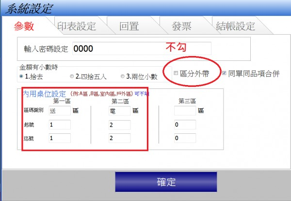

我的客人全部都是外帶,請問內用區可以做其他分類嗎?
3 個回答
您好 區分是固定
但您可以將參數設定為

就可以得到類似的效果
我點餐大多是外帶，勾選區分後，變成每次外帶點餐多一道手續去選擇，只為了久久零星幾筆的電話或外送，似乎划不來
您好
請先 "不要" 勾選 區分外帶
外帶就不會有另一道手續
將內用桌位改成 "外送" "電話" 作為區別
結果如下
您好 區分是固定
但您可以將參數設定為

就可以得到類似的效果
您好
請先 "不要" 勾選 區分外帶
外帶就不會有另一道手續
將內用桌位改成 "外送" "電話" 作為區別
結果如下